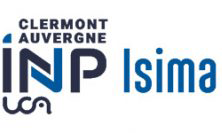
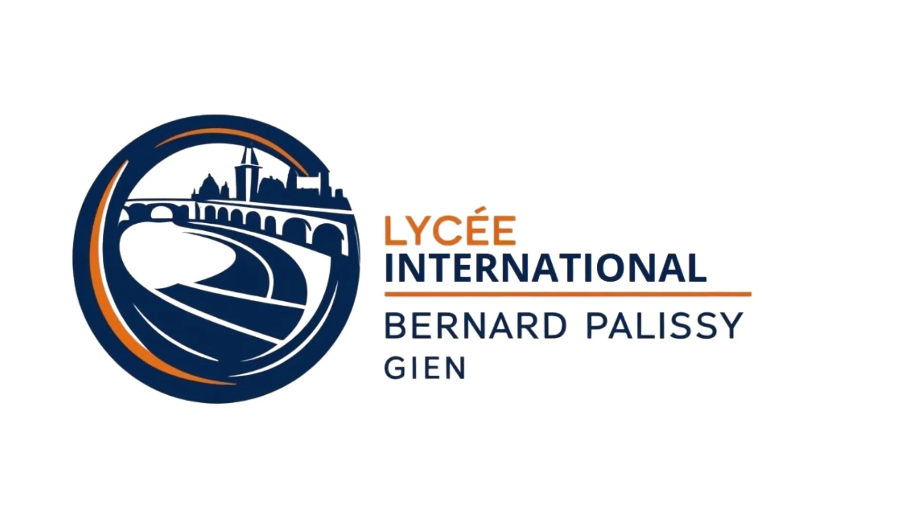

Mon parcours de formation
BUT Réseaux & Télécoms
IUT - Clermont-Ferrand (63)
Formation en trois ans basée sur les infrastructures réseau, la cybersécurité, les télécommunications et l'administration système. Acquisition de compétences techniques et professionnelles à travers des projets pratiques et des stages en entreprise ou une alternance.

Classe préparatoire intégrée à l'école d'ingénieur ISIMA
ISIMA - Clermont-Ferrand (63)
Préparation à l'école d'ingénieurs ISIMA, en suivant les cours de licence maths-informatique et des modules dédiés à ISIMA.

Baccalauréat général section européenne
Lycée Bernard Palissy - Gien (45)
Obtention du baccalauréat avec mention assez bien.
Spécialités : Mathématiques, Physique-Chimie et Sciences de l'Ingénieur.
Section européenne : Cours d'Anglais et de Mathématiques, Sciences Économiques et Sociales et Management, en anglais.
